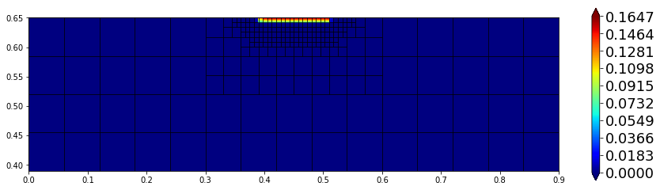
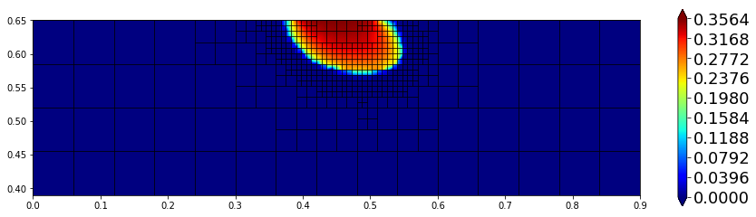
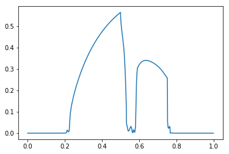
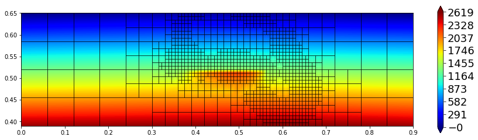
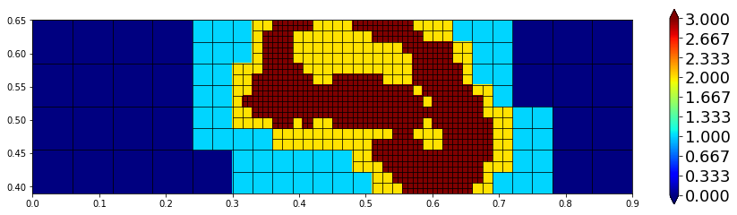

Problem description¶
Describe model and scheme here…
[1]:
import matplotlib
matplotlib.rc( 'image', cmap='jet' )
import math
from ufl import *
from dune.ufl import Space, Constant
import dune.fem as fem
import dune.create as create
from dune.generator import algorithm
from dune.common import FieldVector
from dune.grid import cartesianDomain, Marker, gridFunction
from dune.fem.function import levelFunction, integrate
from dune.plotting import plotPointData as plot
from limit import createOrderRedcution, createLimiter
Some parameters
[2]:
maxLevel = 3
maxOrder = 3
dt = 5.
endTime = 800.
coupled = True
tolerance = 3e-2
penalty = 5 * (maxOrder * ( maxOrder + 1 ))
newtonParameters = {"tolerance": tolerance,
"verbose": "true", "linear.verbose": "false",
"linabstol": 1e-8, "reduction": 1e-8}
Defining the model¶
using a Broks Corey pressure law
[3]:
def brooksCorey(P,s_n):
s_w = 1-s_n
s_we = (s_w-P.s_wr)/(1.-P.s_wr-P.s_nr)
s_ne = (s_n-P.s_nr)/(1.-P.s_wr-P.s_nr)
if P.useCutOff:
cutOff = lambda a: min_value(max_value(a,0.00001),0.99999)
s_we = cutOff(s_we)
s_ne = cutOff(s_ne)
kr_w = s_we**((2.+3.*P.theta)/P.theta)
kr_n = s_ne**2*(1.-s_we**((2.+P.theta)/P.theta))
p_c = P.pd*s_we**(-1./P.theta)
dp_c = P.pd * (-1./P.theta) * s_we**(-1./P.theta-1.) * (-1./(1.-P.s_wr-P.s_nr))
l_n = kr_n / P.mu_n
l_w = kr_w / P.mu_w
return p_c,dp_c,l_n,l_w
Constants and domain description for anisotropic lens test
[4]:
class AnisotropicLens:
dimWorld = 2
domain = cartesianDomain([0,0.39],[0.9,0.65],[15,4])
x = SpatialCoordinate(triangle)
g = [0,]*dimWorld ; g[dimWorld-1] = -9.810 # [m/s^2]
g = as_vector(g)
r_w = 1000. # [Kg/m^3]
mu_w = 1.e-3 # [Kg/m s]
r_n = 1460. # [Kg/m^3]
mu_n = 9.e-4 # [Kg/m s]
lens = lambda x,a,b: (a-b)* (conditional(abs(x[1]-0.49)<0.03,1.,0.)* conditional(abs(x[0]-0.45)<0.11,1.,0.)) + b
p_c = brooksCorey
Kdiag = lens(x, 6.64*1e-14, 1e-10) # [m^2]
Koff = lens(x, 0,-5e-11) # [m^2]
K = as_matrix( [[Kdiag,Koff],[Koff,Kdiag]] )
Phi = lens(x, 0.39, 0.40) # [-]
s_wr = lens(x, 0.10, 0.12) # [-]
s_nr = lens(x, 0.00, 0.00) # [-]
theta = lens(x, 2.00, 2.70) # [-]
pd = lens(x, 5000., 755.) # [Pa]
#### initial conditions
p_w0 = (0.65-x[1])*9810. # hydrostatic pressure
s_n0 = 0 # fully saturated
# boundary conditions
inflow = conditional(abs(x[0]-0.45)<0.06,1.,0.)* conditional(abs(x[1]-0.65)<1e-8,1.,0.)
J_n = -5.137*1e-5
J_w = 1e-20
dirichlet = conditional(abs(x[0])<1e-8,1.,0.) + conditional(abs(x[0]-0.9)<1e-8,1.,0.)
p_wD = p_w0
s_nD = s_n0
q_n = 0
q_w = 0
useCutOff = False
P = AnisotropicLens()
Setup grid, discrete spaces and functions
[5]:
grid = create.view("adaptive", "ALUCube", P.domain, dimgrid=2)
if coupled:
spc = create.space("dglegendrehp", grid, dimRange=2, order=maxOrder)
else:
spc1 = create.space("dglegendrehp", grid, dimRange=1, order=maxOrder)
spc = create.space("product", spc1,spc1, components=["p","s"] )
solution = spc.interpolate([0,0], name="solution")
solution_old = spc.interpolate([0,0], name="solution_old")
sol_pm1 = spc.interpolate([0,0], name="sol_pm1")
intermediate = spc.interpolate([0,0], name="iterate")
persistentDF = [solution,solution_old,intermediate]
fvspc = create.space("finitevolume", grid, dimRange=1, storage="fem")
estimate = fvspc.interpolate([0], name="estimate")
estimate_pm1 = fvspc.interpolate([0], name="estimate-pm1")
[6]:
uflSpace = Space((P.dimWorld,P.dimWorld),2)
u = TrialFunction(uflSpace)
v = TestFunction(uflSpace)
cell = uflSpace.cell()
x = SpatialCoordinate(cell)
tau = Constant(dt, name="timeStep")
beta = Constant(penalty, name="penalty")
p_w = u[0]
s_n = u[1]
p_c,dp_c,l_n,l_w = P.p_c(s_n=intermediate[1])
Bulk terms
[7]:
dBulk_p = P.K*( (l_n+l_w)*grad(p_w) + l_n*dp_c*grad(s_n) )
dBulk_p += -P.K*( (P.r_n*l_n+P.r_w*l_w)*P.g )
bulk_p = -(P.q_w+P.q_n)
dBulk_s = P.K*l_n*dp_c*grad(s_n)
dBulk_s += P.K*l_n*(grad(p_w)-P.r_n*P.g)
bulk_s = -P.q_n
Boundary and initial conditions
[8]:
p_D, s_D = P.p_wD, P.s_nD,
p_N, s_N = P.J_w+P.J_n, P.J_n
p_0, s_0 = P.p_w0, P.s_n0
Bulk integrals
[9]:
form_p = ( inner(dBulk_p,grad(v[0])) + bulk_p*v[0] ) * dx
form_s = ( inner(dBulk_s,grad(v[1])) + bulk_s*v[1] ) * dx
Boundary fluxes
[10]:
form_p += p_N * v[0] * P.inflow * ds
form_s += s_N * v[1] * P.inflow * ds
DG terms
[11]:
def sMax(a): return max_value(a('+'), a('-'))
n = FacetNormal(cell)
hT = MaxCellEdgeLength(cell)
he = avg( CellVolume(cell) ) / FacetArea(cell)
heBnd = CellVolume(cell) / FacetArea(cell)
k = dot(P.K*n,n)
lambdaMax = k('+')*k('-')/avg(k)
def wavg(z): return (k('-')*z('+')+k('+')*z('-'))/(k('+')+k('-'))
Penalty terms (including dirichlet boundary treatment)
[12]:
p_c0,dp_c0,l_n0,l_w0 = P.p_c(0.5)
penalty_p = [beta*lambdaMax*sMax(l_n0+l_w0),
beta*k*(l_n0+l_w0)]
penalty_s = [beta*lambdaMax*sMax(l_n0*dp_c0),
beta*k*(l_n0*dp_c0)]
form_p += penalty_p[0]/he * jump(u[0])*jump(v[0]) * dS
form_s += penalty_s[0]/he * jump(u[1])*jump(v[1]) * dS
form_p += penalty_p[1]/heBnd * (u[0]-p_D) * v[0] * P.dirichlet * ds
form_s += penalty_s[1]/heBnd * (u[1]-s_D) * v[1] * P.dirichlet * ds
Consistency terms
[13]:
form_p -= inner(wavg(dBulk_p),n('+')) * jump(v[0]) * dS
form_s -= inner(wavg(dBulk_s),n('+')) * jump(v[1]) * dS
form_p -= inner(dBulk_p,n) * v[0] * P.dirichlet * ds
form_s -= inner(dBulk_s,n) * v[1] * P.dirichlet * ds
Time discretization¶
[14]:
form_s = P.Phi*(u[1]-solution_old[1])*v[1] * dx + tau*form_s
Stabilization (Limiter)¶
[15]:
limiter = createLimiter( spc, limiter="scaling" )
tmp = solution.copy()
def limit(target):
tmp.assign(target)
limiter(tmp,target)
Time stepping Converting UFL forms to scheme
[16]:
if coupled:
form = form_s + form_p
tpModel = create.model( "integrands", grid, form == 0)
# tpModel.penalty = penalty
# tpModel.timeStep = dt
scheme = create.scheme("galerkin", tpModel, spc, ("suitesparse","umfpack"),
parameters={"fem.solver.newton." + k: v for k, v in newtonParameters.items()})
else:
uflSpace1 = Space((P.dimWorld,P.dimWorld),1)
u1 = TrialFunction(uflSpace1)
v1 = TestFunction(uflSpace1)
form_p = replace(form_p, { u:as_vector([u1[0],intermediate.s[0]]),
v:as_vector([v1[0],0.]) } )
form_s = replace(form_s, { u:as_vector([solution[0],u1[0]]),
intermediate:as_vector([solution[0],intermediate[1]]),
v:as_vector([0.,v1[0]]) } )
form = [form_p,form_s]
tpModel = [create.model( "integrands", grid, form[0] == 0),
create.model( "integrands", grid, form[1] == 0)]
# tpModel[0].penalty = penalty
# tpModel[1].penalty = penalty
# tpModel[1].timeStep = dt
scheme = [create.scheme("galerkin", m, s, ("suitesparse","umfpack"),
parameters={"fem.solver.newton." + k: v for k, v in newtonParameters.items()})
for m,s in zip(tpModel,spc.components)]
Stopping condition for iterative approaches
[17]:
def errorMeasure(w,dw):
rel = integrate(grid, [w[1]**2,dw[1]**2], 5)
return math.sqrt(rel[1]) < tolerance * math.sqrt(rel[0])
Iterative schemes (iterative or impes-iterative)¶
[18]:
def step():
n = 0
solution_old.assign(solution)
while True:
intermediate.assign(solution)
if coupled:
scheme.solve(target=solution)
else:
scheme[0].solve(target=solution.p)
scheme[1].solve(target=solution.s)
limit(solution)
n += 1
# print("step",n,flush=True)
if errorMeasure(solution,solution-intermediate) or n==20:
break
HP Adpativity¶
Setting up residual indicator
[19]:
uflSpace0 = Space((P.dimWorld,P.dimWorld),1)
v0 = TestFunction(uflSpace0)
Rvol = P.Phi*(u[1]-solution_old[1])/tau - div(dBulk_s) - bulk_s
estimator = hT**2 * Rvol**2 * v0[0] * dx + he * inner(jump(dBulk_s), n('+'))**2 * avg(v0[0]) * dS + heBnd * (s_N + inner(dBulk_s,n))**2 * v0[0] * P.inflow * ds + penalty_s[0]**2/he * jump(u[1])**2 * avg(v0[0]) * dS + penalty_s[1]**2/heBnd * (s_D - u[1])**2 * v0[0] * P.dirichlet * ds
estimator = replace(estimator, {intermediate:u})
estimatorModel = create.model("integrands", grid, estimator == 0)
# estimatorModel.timeStep = dt
# estimatorModel.penalty = penalty
estimator = create.operator("galerkin", estimatorModel, spc, fvspc)
Marker for grid adaptivity (h)¶
[20]:
hTol = 1e-16 # changed later
def markh(element):
center = element.geometry.referenceElement.center
eta = estimate.localFunction(element).evaluate(center)[0]
if eta > hTol and element.level < maxLevel:
return Marker.refine
elif eta < 0.01*hTol:
return Marker.coarsen
else:
return Marker.keep
Marker for space adaptivity (p)¶
[21]:
pTol = 1e-16
def markp(element):
center = element.geometry.referenceElement.center
r = estimate.localFunction(element).evaluate(center)[0]
r_p1 = estimate_pm1.localFunction(element).evaluate(center)[0]
eta = abs(r-r_p1)
polorder = spc.localOrder(element)
if eta < pTol:
return polorder-1 if polorder > 1 else polorder
elif eta > 100.*pTol:
return polorder+1 if polorder < maxOrder else polorder
else:
return polorder
Operator for projecting into space with a reduced order on every element
[22]:
orderreduce = createOrderRedcution( spc )
Main program¶
Pre adapt the grid
[23]:
hgrid = grid.hierarchicalGrid
hgrid.globalRefine(1)
for i in range(maxLevel):
print("pre adaptive (",i,"): ",grid.size(0),end="\n")
solution.interpolate( as_vector([p_0,s_0]) )
limit(solution)
step()
estimator(solution, estimate)
hgrid.mark(markh)
fem.adapt(persistentDF)
print("final pre adaptive (",i,"): ",dt,grid.size(0),end="\n")
pre adaptive ( 0 ): 240
pre adaptive ( 1 ): 213
pre adaptive ( 2 ): 363
final pre adaptive ( 2 ): 5.0 273
Define the constant for the h adaptivity
[24]:
solution.interpolate( as_vector([p_0,s_0]) )
limit(solution)
estimator(solution, estimate)
timeTol = sum(estimate.dofVector) / endTime
print('Using timeTol = ',timeTol, end='\n')
Using timeTol = 3.2161312218750177e-15
Time loop
[25]:
t = 0
saveStep = 0
while t < endTime:
step()
# h adaptivity
hTol = timeTol * dt / grid.size(0)
estimator(solution, estimate)
hgrid.mark(markh)
fem.adapt(persistentDF)
# p adaptivity
estimator(solution, estimate)
orderreduce(solution,sol_pm1)
estimator(sol_pm1, estimate_pm1)
fem.spaceAdapt(spc, markp, persistentDF)
t += dt
if t>=saveStep:
print(t,grid.size(0),sum(estimate.dofVector),hTol,"# timestep",flush=True)
plot(solution[1],figsize=(15,4))
saveStep += 100
5.0 240 0.0 5.890350223214318e-17 # timestep

100.0 357 0.0 4.504385464810949e-17 # timestep
200.0 477 0.0 3.4360376302083523e-17 # timestep

300.0 582 0.0 2.748830104166682e-17 # timestep
400.0 615 0.0 2.5770282226562644e-17 # timestep
500.0 714 0.0 2.242769331851477e-17 # timestep
600.0 813 0.0 1.949170437500011e-17 # timestep
700.0 924 0.0 1.7690490769389536e-17 # timestep
800.0 1011 0.0 1.6096752862237327e-17 # timestep
Postprocessing Show solution along a given line
[26]:
x0 = FieldVector([0.25, 0.65])
x1 = FieldVector([0.775, 0.39])
p,v = algorithm.run('sample', 'utility.hh', solution, x0, x1, 1000)
from matplotlib import pyplot
import numpy
x = numpy.zeros(len(p))
y = numpy.zeros(len(p))
l = (x1-x0).two_norm
for i in range(len(x)):
x[i] = (p[i]-x0).two_norm / l
y[i] = v[i][1]
pyplot.plot(x,y)
pyplot.show()

[27]:
from dune.grid import gridFunction
from dune.fem.function import levelFunction
@gridFunction(grid,name="polOrder")
def polOrder(e,x):
return [spc.localOrder(e)]
plot(solution[0],figsize=(15,4))
plot(solution[1],figsize=(15,4))
plot(polOrder,figsize=(15,4))
plot(levelFunction(grid),figsize=(15,4))


